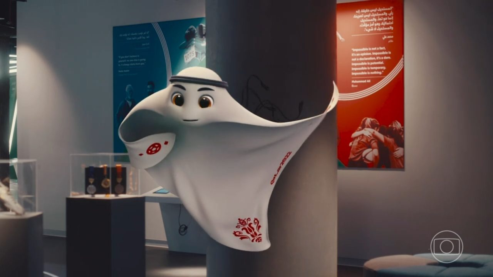
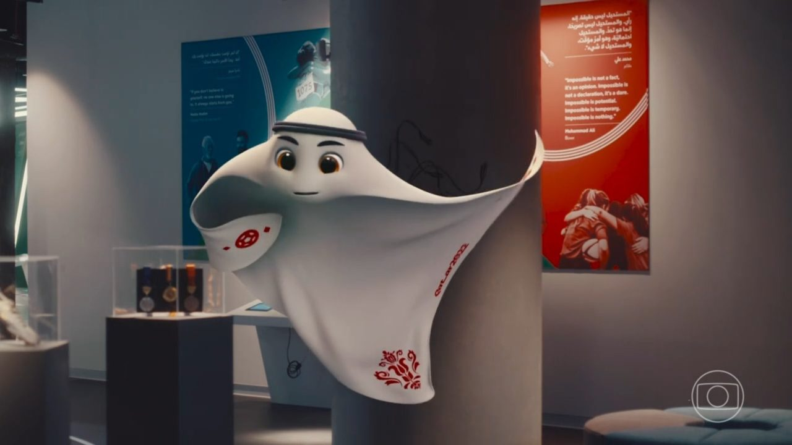

SELEÇÕES
| Pais |
Quantas copas participou |
Quantas premiações |
Técnicos |
Principais Jogadores |
Jogos que irá participar |
| Brasil |
21 |
Campeão 1958/1962/1970/1994/2002 |
Tite |
Neymar, Vínicius Júnior, Daniel Alves |
24/11 16hs contra Servia no Estadio Lusail; 28/11 13hs contra Suiça no Estadio Ras Abu Aboud; 02/12 16hs contra Camarões no Estadio Lusail. |
| Alemanha |
19 |
Campeão 1954/1974/1990/2014 |
Hans-Dieter Flick |
Manuel Neuer, Toni Kroos, Thomas Muller |
23/11 10hs contra Japão no Estádio Khalifa; 27/11 16hs contra Espanha no Estádio Al Bayt; 01/12 16hs contra Costa Rica ou Nova Zelândia no Estádio Al Bayt. |
| Arabia Saudita |
5 |
Segunda 1994 |
Hervé Renard |
Saleh, Mohamed Kanno, Salem Al-Dawsari |
22/11 7hrs contra Argentina no Estádio Lusail; 26/11 10hs contra Polônia no Estádio Education City; 30/11 16hs contra México no Estádio Lusail. |
| Argentina |
17 |
Campeão 1978/1986 |
Lionel Scaloni |
Lionel Messi, Julian Alvarez, Paulo Dybala |
22/11 7hrs contra Arabia Saudita no Estádio Lusail; 26/11 16hs contra México no Estádio Lusail; 30/11 16hs contra Polônia no Estádio Ras Abu Aboud. |
| Camarões |
7 |
Quartas 1990 |
Rigobert Song |
Roger Milla, André Onana, Patrick Mboma |
24/11 7hrs contra Suíça no Estádio Al Janoub; 28/11 7hs contra Sérvia no Estádio Al Janoub; 02/12 16hs contra Brasil no Estádio Lusail. |
| Bélgica |
13 |
Terceiro lugar 2018 |
Roberto Martínez Montoliu |
Eden Hazard, Jeremy Doku, Axel Witsel |
23/11 16hs contra Canadá no Estádio Ahmad Bin Ali; 27/11 10hs contra Marrocos no Estádio Al Thumama; 01/12 12hs contra Croácia no Estádio Ahmad Bin Ali. |
| Canadá |
13 |
Eliminações |
John Herdman |
Alphonso Davies, Jonathan David, Cyle Larin |
23/11 16hs contra Bélgica no Estádio Ahmad Bin Ali; 27/11 13hs contra Croácia no Estádio Khalifa; 01/12 12hs contra Marrocos no Estádio Al Thumama. |
| Qatar |
* |
* |
Félix Sánchez Bas |
Ro-ro, Almoez Ali, Karim Boudiaf |
21/11 13hs contra Equador no Estádio Al Bayt; 25/11 10hs contra Senegal no Estádio Al Thumama; 29/11 12hs contra Holanda no Estádio Al Bayt. |
| Coreia do Sul |
10 |
Quarto lugar 2002 |
Paulo Jorge Gomes Bento |
Son Heug-min, Lee Kang-in, Kim Min-jae |
24/11 10hs contra Uruguai no Estádio Education City; 28/11 10hs contra Gana no Estádio Education City; 02/12 12hs contra Portugal no Estádio Education City. |
| Cróacia |
5 |
Vice Campeão 2018 |
Zlatko Dalic |
Luka Modric, Marcelo Brozovic, Ante Rebic |
23/11 7hs contra Marrocos no Estádio Al Bayt; 27/11 13hs contra Canadá no Estádio Khalifa; 01/12 16hs contra Bélgica no Estádio Ahmad Bin Ali. |
| Dinamarca |
5 |
Quartas 1998 |
Kasper Hjulmand |
Simon Kjaer, Christian Eriksen, Andreas Christensen |
22/11 10hs contra Tunísia no Estádio Education City; 26/11 13hs contra França no Estádio Ras Abu Aboud; 30/11 12hs contra Peru/Austrália/Emirados Arabes no Estádio Al Janoub. |
| Espanha |
15 |
Campeão 2010 |
Luis Enrique |
Gavi, Pedri, Ferran Torres |
23/11 13hs contra Costa Rica/Nova Zelândia no Estádio Al Thumama; 27/11 16hs contra Alemanha no Estádio Al Bayt; 01/12 16hs contra Japão no Estádio Khalifa. |
| Estados Unidos |
10 |
Oitavas |
Gregg Berhalter |
Giovanni Reyna, Ricardo Pepi, Christian Pulisic |
21/11 16hs contra País de Gales/Escócia/Ucrânia no Estádio Ahmad Bin Ali; 25/11 16hs contra Inglaterra no Estádio Al Bayt; 29/11 16hs contra Irã no Estádio Al Thumama. |
| França |
15 |
Campeão 1998/2018 |
Didier Deschamps |
Mbappé, Karim Benzema, Paul Pogba |
22/11 16hs contra Peru/Austrália/Emirados Arabes no Estádio Al Bayt; 26/11 13hs contra Dinamarca no Estádio Ras Abu Aboud; 30/11 12hs contra Tunísia no Estádio Education City. |
| Gana |
3 |
Quartas 2010 |
Charles Akonnor e Otto Addo |
Thomas Partey, André Ayew, Jordan Ayew |
24/11 13hs contra Portugal no Estádio Ras Abu Aboud; 28/11 10hs contra Coreia do Sul no Estádio Education City; 02/12 12hs contra Uruguai no Estádio Al Janoub. |
| Holanda |
10 |
Vice Campeões 1974/1978/2010 |
Louis van Gaal |
Frankie de Jong, Luke de Jong, Memphis Depay |
21/11 7hs contra Senegal no Estádio Al Thumama; 25/11 13hs contra Equador no Estádio Khalifa; 29/11 12hs contra Catar no Estádio Al Bayt. |
| Inglaterra |
15 |
Campeão 1966 |
Gareth Southgate |
Steven Gerrard, Harry Kane, Bukayo Saka |
21/11 10hs contra Irã no Estádio Khalifa; 25/11 16hs contra EUA no Estádio Al Bayt; 29/11 16hs contra País de Gales/Escócia/Ucrânia no Estádio Ahmad Bin Ali. |
| Irã |
5 |
Primeira Fase |
Dragan Skocic |
Mehdi Taremi, Sardar Azmoun, Mehdi Ghayedi |
21/11 10hs contra Inglaterra no Estádio Khalifa; 25/11 7hs contra País de Gales/Escócia/Ucrânia no Estádio Ahmad Bin Ali; 29/11 16hs contra EUA no Estádio Al Thumama. |
| Itália |
18 |
Campeão 1934/1938/1982/2006 |
Roberto Mancini |
Frederico Chiesa, Giorgio Chiellini, Marco Verrati |
Não participará em 2022 |
| Japão |
6 |
Segunda fase 2002/2010/2018 |
Hajime Moriyasu |
Takumi Minamino, Takefusa Kubo, Junya Ito |
23/11 10hs contra Alemanha no Estádio Khalifa; 27/11 7hs contra Costa Rica/Nova Zelândia no Estádio Ahmad Bin Ali; 01/12 16hs contra Espanha no Estádio Khalifa. |
| Marrocos |
5 |
Segunda fase 1986 |
Vahid Halilhodzic |
Sofiane Boufai, Ryan Mmaee, Hakim Ziyech |
23/11 07hs contra Croácia no Estádio Al Bayt |
| México |
16 |
Quartas 1970/1986 |
Gerardo Martino |
Guillermo Ochoa, Marcelo Flores, Diego Lainez |
22/11 13hs contra Polônia no Estádio 974(Porto de Doha |
| Pôlonia |
8 |
Terceiro Lugar 1984/1982 |
Czeslaw Michniewicz |
Matty Cash, Kami Gilk, Nicola Zalewski |
26/11 10hs contra Arábia Saudita no Estádio Education City |
| Portugal |
7 |
Teceiro Lugar 1966 |
Fernando Santos |
Cristiano Ronaldo, Luis Figo, Otávio, Pepe |
24/11 13hs contra Gana no Estádio 974(Porto de Doha |
| Senegal |
2 |
Quartas 2002 |
Aliou Cissé |
Sadio Mane, Bouna Sarr, Saliou Ciss |
21/11 07hs contra Holanda no Estádio Al Thumama |
| Suíça |
11 |
Quartas 1934/1938/1954 |
Murat Yakin |
Yann Som, Denis Zakaria, Uben Vargas |
24/11 07hs contra Camarões no Estádio Al Janoub(Al Wakrah) |
| Sérvia |
12 |
Quarto Lugar 1930/1962 |
Dragan Stojkovic |
Luka Jovik, Sasa Lukic, Dusan Tadic |
02/12 16hs contra Suiça no Estádio 974(Porto de Doha) |
| Tunísia |
5 |
Primeira fase |
Jalel Kadri |
Hannibal Majbri, Omar Rekik, Youssef Msakni |
26/11 07hs contra Peru ou Autralia ou Emirados Árabes no Estádio Al Janoub(Al Wakrah |
| Uruguai |
13 |
Campeão 1930/1950 |
Diego Alonso |
Luis Alberto Soares, Edinson Cavani, Fernando Muslera |
24/11 10hs contra Coreia do sul no Estádio Education City |
| Escócia |
8 |
Primeira fase |
Steve Clarke |
Andrew Robertson, Scott McTominay, Billy Gilmour |
Indefinido |
| País de Gales |
1 |
Quartas de final |
Ryan Giggs |
Gareth Bale, Aaron Ramsey, Daniel James |
25/11 07hs contra Irã no Estádio Ahmad Bin Ali(Al Rayyan) |
| Ucrânia |
1 |
Quartas de final |
Oleksandr Petrakov |
Tetê, Dodô, Pedrinho |
Indefinido |
| Austrália |
5 |
Segunda 2006 |
Graham Arnold |
Mathew Ryan, Tom Rogic, Bruno Fornaroli |
30/11 12hs contra Dinamarca no Estádio Al Janoub(Al Wakrah) |
| Emirados Arabes |
1 |
Primeira fase |
Rodolfo Arruabarrena |
Caio Canedo Correa, Ismail Matar, Kalhid Eisa |
30/11 12hs contra Dinamarca no Estádio Al Janoub(Al Wakrah) |
| Peru |
5 |
Quartas 1978 |
Ricardo Gareca |
Paolo Guerrero, Christian Cueva, André Carrilo |
30/11 12hs contra Dinamarca no Estadio Al Janoub(Al Wakrah) |
| Costa Rica |
5 |
Quartas 2014 |
Luiz Fernando Soares |
Joel Campbell, Calso Borges, Carlos Andrei |
01/12 16hs contra Alemanha no Estádio Al Bayt |
| Nova Zelândia |
2 |
Primeira Fase |
Danny Hay |
Chris Wood, Liberato Cacace, Bill Tuiloma |
01/12 16hs contra Alemanha no Estádio Al Bayt |
 
